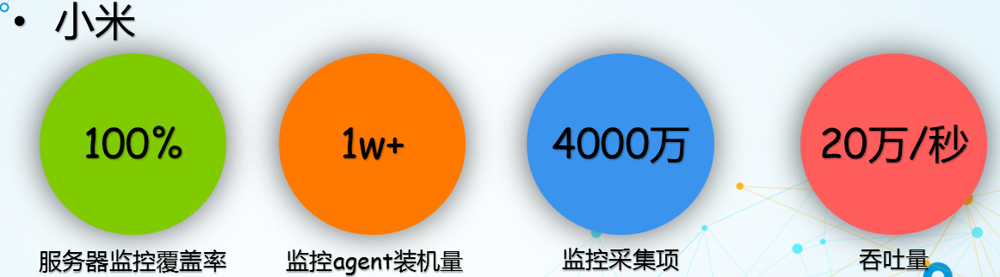
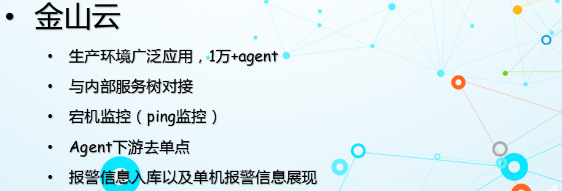
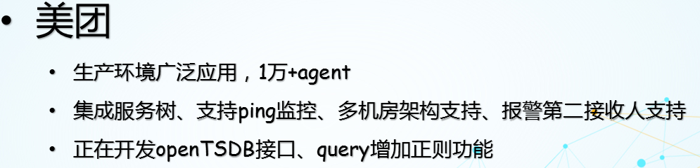
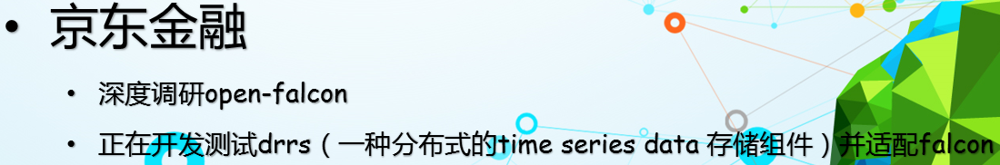

Open-Falcon 是小米运维部开源的一款互联网企业级监控系统解决方案.
Github
Highlights and features
- 数据采集免配置：agent自发现、支持Plugin、主动推送模式
- 容量水平扩展：生产环境每秒50万次数据收集、告警、存储、绘图，可持续水平扩展。
- 告警策略自发现：Web界面、支持策略模板、模板继承和覆盖、多种告警方式、支持回调动作。
- 告警设置人性化：支持最大告警次数、告警级别设置、告警恢复通知、告警暂停、不同时段不同阈值、支持维护周期，支持告警合并。
- 历史数据高效查询：秒级返回上百个指标一年的历史数据。
- Dashboard人性化：多维度的数据展示，用户自定义Dashboard等功能。
- 架构设计高可用：整个系统无核心单点，易运维，易部署。
Quick Install
Open-Falcon，整体可以分为两部分，即绘图组件、告警组件。其中：
- 安装绘图组件 负责数据的采集、收集、存储、归档、采样、查询、展示（Dashboard/Screen）等功能，可以单独工作，作为time-series data的一种存储展示方案。
- 安装告警组件 负责告警策略配置（portal）、告警判定（judge）、告警处理（alarm/sender）、用户组管理（uic）等，可以单独工作。
- 如果你熟悉docker，想快速搭建并体验Open-Falcon的话，请参考 使用Docker镜像安装Open-Falcon
Document
Introduction
监控系统是整个运维环节，乃至整个产品生命周期中最重要的一环，事前及时预警发现故障，事后提供翔实的数据用于追查定位问题。监控系统作为一个成熟的运维产品，业界有很多开源的实现可供选择。当公司刚刚起步，业务规模较小，运维团队也刚刚建立的初期，选择一款开源的监控系统，是一个省时省力，效率最高的方案。之后，随着业务规模的持续快速增长，监控的对象也越来越多，越来越复杂，监控系统的使用对象也从最初少数的几个SRE，扩大为更多的DEVS，SRE。这时候，监控系统的容量和用户的“使用效率”成了最为突出的问题。
监控系统业界有很多杰出的开源监控系统。我们在早期，一直在用zabbix，不过随着业务的快速发展，以及互联网公司特有的一些需求，现有的开源的监控系统在性能、扩展性、和用户的使用效率方面，已经无法支撑了。
因此，我们在过去的一年里，从互联网公司的一些需求出发，从各位SRE、SA、DEVS的使用经验和反馈出发，结合业界的一些大的互联网公司做监控，用监控的一些思考出发，设计开发了小米的监控系统：Open-Falcon。
Screenshots
Dashboard Homepage

Dashboard Screen

大图

Portal host group

Portal template

Contributors
- 小米运维部: 博客 http://noops.me
- laiwei: https://github.com/laiwei 来炜没睡醒@微博 / hellolaiwei@微信
- 秦晓辉: http://ulricqin.com/ UlricQin@微博 UlricQin@Twitter
- yubo: https://github.com/yubo x80386@微信
- niean: https://github.com/niean niean_sail@微信
- QQ群：373249123 （已满员）
- QQ二群：516088946 （请加该群）
- 微信公众号：
合作公司
   如果您所在的公司也在使用Open-Falcon，请在这里 issue更新下信息，谢谢
License
Copyright 2014-2015 Xiaomi, Inc. Licensed under the Apache License, Version 2.0: http://www.apache.org/licenses/LICENSE-2.0